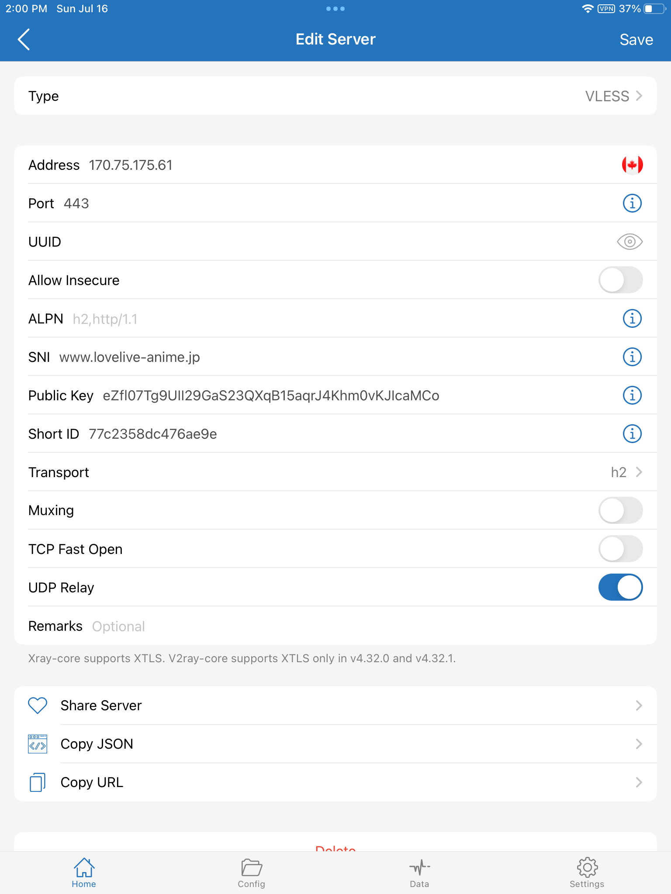
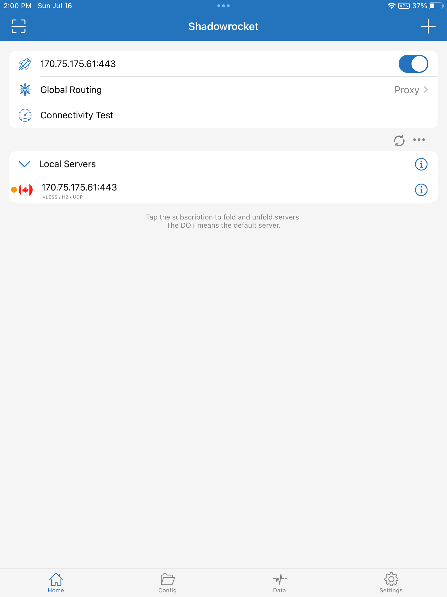

August 3, 2023
This is a brief overview of how to configure Xray on a server and on the Shadowrocket GUI for iPad and iPhone.
Install Xray-core on your server using the latest beta, and configure it to run as root:
bash -c "$(curl -L https://github.com/XTLS/Xray-install/raw/main/install-release.sh)" @ install --beta -u rootExample of a completed server configuration file /usr/local/etc/xray/config.json:
{
"log": {
"loglevel": "warning"
},
"routing": {
"domainStrategy": "IPIfNonMatch",
"rules": [
{
"type": "field",
"ip": [
"geoip:cn",
"geoip:private"
],
"outboundTag": "block"
}
]
},
"inbounds": [
{
"listen": "0.0.0.0",
"port": 443,
"protocol": "vless",
"settings": {
"clients": [
{
"id": "3b5390c5-52a2-472d-8dc2-103ef508be6c",
"flow": ""
}
],
"decryption": "none"
},
"streamSettings": {
"network": "h2",
"security": "reality",
"realitySettings": {
"show": false,
"dest": "www.lovelive-anime.jp:443",
"xver": 0,
"serverNames": [
"www.lovelive-anime.jp"
],
"privateKey": "QNraK6EdxPNOzfbL2G1BTl_OeMSxm49H5vps2qzQ3E0",
"shortIds": [
"77c2358dc476ae9e"
]
}
}
}
],
"outbounds": [
{
"protocol": "freedom",
"tag": "direct"
},
{
"protocol": "blackhole",
"tag": "block"
}
]
}
Restart xray systemd service with your final configuration file:
systemctl restart xraysystemctl status xrayThere are four main pages in the Shadowrocket graphical user interface:
Here is an example of a completed client configuration:
To route all traffic through the proxy server, specify a Global Routing setting of Proxy.
